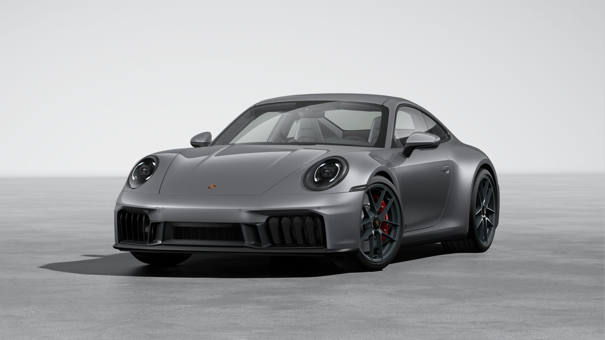

Interior
A tu estilo
Interno
El interior del Porsche 911 es una obra maestra de diseño y funcionalidad, donde la elegancia atemporal se encuentra con la tecnología de vanguardia. Cada detalle, desde los asientos deportivos hasta el volante multifunción, está meticulosamente elaborado para ofrecer una experiencia de conducción incomparable. El cockpit, centrado en el conductor, fusiona a la perfección el ADN deportivo de Porsche con el lujo moderno, creando un espacio que es tanto un santuario para el entusiasta como una maravilla de ingeniería. En el 911, no solo conduces un ícono, vives en él.
Deportivo
Asientos
Los asientos ofrecen una experiencia de confort supremo, fusionando lujo y ergonomía para crear un "Oasis de Comodidad en Alta Velocidad". Diseñados meticulosamente para brindar soporte durante la conducción deportiva y relajación en los viajes largos, estos asientos son la perfecta combinación de funcionalidad y elegancia, asegurando que cada kilómetro sea tan cómodo como emocionante.
Calidad
Volante
"El volante del Porsche 911 es una obra maestra de diseño y funcionalidad, diseñado para ofrecer un agarre perfecto y una respuesta inmediata. Con su forma ergonómica y materiales de alta calidad, cada vuelta del volante se siente intuitiva y precisa. Equipado con controles multifuncionales, permite al conductor acceder a diversas funciones sin perder la concentración en la carretera. Este volante no solo refleja la herencia deportiva de Porsche, sino que también proporciona una conexión emocional con el vehículo, haciendo que cada viaje sea una experiencia única y emocionante."
Exterior

Perfecta para correr
Diseño
Las líneas marcadas y una parte trasera poderosa refuerzan su carácter de forma notable. En los modelos GTS, el carenado frontal de nuevo diseño con llamativos elementos aerodinámicos verticales, incluidas rejillas de refrigeración adaptativas, supone un elemento visual destacado.
No tan feroz, pero veloz
Frontal
Elegante y aerodinámica, con líneas limpias que fluyen desde el capó hacia los distintivos faros redondeados, evocando su icónico legado. Los faros LED, perfectamente integrados en su diseño clásico, proyectan una mirada penetrante, mientras que la amplia parrilla baja y los respiraderos esculpidos a los lados optimizan el rendimiento aerodinámico y la refrigeración del motor.

Perfeccion
Trasero
Los tubos de escape dobles, simétricamente posicionados, emiten un rugido distintivo, recordando el carácter deportivo del 911. Las curvas musculosas y la baja altura enfatizan su estabilidad, con un alerón trasero que, cuando está desplegado, mejora la aerodinámica y le da un toque de agresividad pura. Cada detalle refleja la combinación perfecta de lujo y potencia, destacando la herencia y la innovación que definen al Porsche 911.
Hyperligero
Materiales
Está fabricada con una combinación de materiales ligeros y resistentes, diseñados para maximizar el rendimiento y la eficiencia aerodinámica sin sacrificar la durabilidad. Materiales como Aluminio: Gran parte de la estructura y los paneles. Acero de alta resistencia: La plataforma y ciertas áreas críticas del chasis utilizan acero de alta resistencia. Polímeros reforzados y plásticos avanzados: Algunas partes, como los espejos laterales, las molduras y algunos componentes aerodinámicos. Tambien está hecho de fibra de carbono

Los mejores del mercado
Frenos
El 911 tiene un sistema de frenos cerámicos Porsche Ceramic Composite Brake (PCCB) que permite un rendimiento de frenado todavía mayor y una presión de frenado constante. Gracias al peso extremadamente reducido de los discos de freno cerámicos, mejoran notablemente la tracción y el confort de marcha.
Giros perfectos
Eje Direccional
El eje direccional aumenta las prestaciones y la aptitud utilitaria a partes iguales. A bajas velocidades, facilita las maniobras o los giros. A velocidades altas, aumenta la estabilidad de conducción.


Brillantes
Leds
Expresivos y típicos de Porsche: los nuevos faros Matrix LED, incluidas todas las funciones de iluminación, como las luces diurnas de 4 puntos, aumentan con su firma luminosa el carácter reconocible del 911 incluso desde lejos.
 Motorizacion
Motorizacion